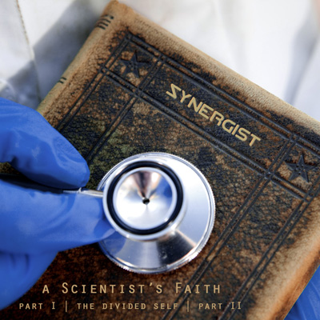

A Scientist's Faith
by Synergist - Lyrics by CutcH*

at first the faith was blind
but then evolved the rational mind
and all these thing we ask ourselves
will I face judgment for all the things I've said and done?
should I resign myself to a power up above?
does any facet have the answer yet?
I need to know
the unknown
and all these things we ask ourselves
if I came to find this light would it guide my way along?
should I define what's right by what others say is wrong?
does any facet have the answer?
I need to know
the unknown
while all your answers unwittingly
were lying through your teeth
this illogical blasphemy
is blinding what the truth could be
you're on your knees
you need eyes open to see
to let light in
bless your heart till it's all you need
till it's all you need
broken fragments of ancient lore
echoes of all through the ages
and on these shoulders stand the giants of our faith
but the rest, well the rest was out of date
moving onward the way things are
theories and reasons for everything
that doesn't mean, my friends, that seeing is belief
maybe the science is without faith
maybe the faith is blind
maybe the science answers how
and the faith is a why
while the faith is asking why
the science is how | spirit
said, the science is asking how | feel it
and we'll figure it out
said, the science is asking how | spirit asks why
lets be reasonable about this
the science is how | feel it asking why
| why?
beating hearts...
and all these things we ask ourselves
if I could define this life, would I find my way to love?
should I align myself with a power up above?
does any facet have the answer yet?
I need to know
the unknown *CutcH is Craig McCutcheon |